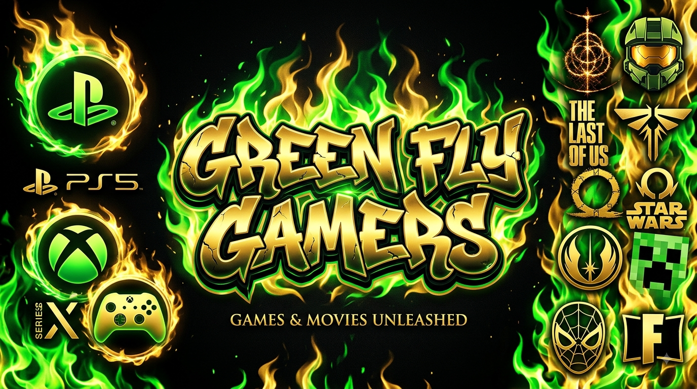

No site vamos falar sobre animes clássicos como Black Clover, Naruto e Bleach, além de jogos como GTA, Minecraft e Roblox. Esperamos que se divirta!
Seja bem-vindo e divirta-se!
Nesse site vou tentar inundar sua mente com informações e curiosidades sobre a cultura geek.

Seja bem-vindo e divirta-se!